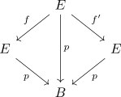

deck action from a connected space as free action
Proposition
Let $B$ be a topological space, $p: E \rightarrow B$ a connected covering and $b \in B$. Then the deck action on the fibre is free
Proof
By free action and induced injection, it suffices to show, that for $e \in \mathrm{Fib}_b^p$
\begin{align*}
\varphi(-,e): \mathrm{Deck}(p) \rightarrow& \mathrm{Fib}_b^p \\
f \mapsto& f(e)
\end{align*}
is injective
Suppose there exist $f,f' \in \mathrm{Deck}(p)$, then since $\mathrm{Cov}(B)$ is a comma category,

commutes, the left and right half by assumption of $f,f'$ as morphisms, the whole as glueing of diagrams
Then by uniqueness of connected factorization through a covering map, since
\begin{align*}
f(e) = f'(e)
\end{align*}
we conclude, that
\begin{align*}
f = f'
\end{align*}